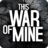

 This War of Mine
Details
 |
|
| Playtime | Not Played |
| Last Activity | Never |
| Added | 18/03/2020 |
| Modified | 20/05/2022 14:46:52 |
| Completion Status | Not Played |
| Library | Epic |
| Source | Epic |
| Platform | PC (Windows) |
| Release Date | 14/11/2014 |
| Community Score | 83 |
| Critic Score | 82 |
| User Score | |
| Genre | Adventure Indie Simulator Strategy Totale |
| Developer | 11 bit studios |
| Publisher | 11 bit studios |
| Feature | Single Player |
| Links | Pagina del negozio Youtube PCGamingWiki |
| Tag | No Media: Icon |
Description
In This War Of Mine you do not play as an elite soldier, rather a group of civilians trying to survive in a besieged city; struggling with lack of food, medicine and constant danger from snipers and hostile scavengers. The game provides an experience of war seen from an entirely new angle.
The pace of This War of Mine is imposed by the day and night cycle. During the day snipers outside stop you from leaving your refuge, so you need to focus on maintaining your hideout: crafting, trading and taking care of your survivors. At night, take one of your civilians on a mission to scavenge through a set of unique locations for items that will help you stay alive.
Make life-and-death decisions driven by your conscience. Try to protect everybody from your shelter or sacrifice some of them for longer-term survival. During war, there are no good or bad decisions; there is only survival. The sooner you realize that, the better.
This War of Mine: Anniversary Edition
It's been two years since This War of Mine global release and we're still expanding the experience. This new free DLC, created especially for the Anniversary Edition, adds new characters, new locations to explore, and most importantly - a whole new ending, leading to a different outcome to the game. The dilemma though remains the same – how far will you go, to protect the ones you care about?
This War of Mine:
* Inspired by real-life events
* Control your survivors and manage your shelter
* Craft weapons, alcohol, beds or stoves – anything that helps you survive
* Make decisions - an often unforgiving and emotionally difficult experience
* Randomized world and characters every time you start a new game
* Charcoal-stylized aesthetics to complement the game's theme
The pace of This War of Mine is imposed by the day and night cycle. During the day snipers outside stop you from leaving your refuge, so you need to focus on maintaining your hideout: crafting, trading and taking care of your survivors. At night, take one of your civilians on a mission to scavenge through a set of unique locations for items that will help you stay alive.
Make life-and-death decisions driven by your conscience. Try to protect everybody from your shelter or sacrifice some of them for longer-term survival. During war, there are no good or bad decisions; there is only survival. The sooner you realize that, the better.
This War of Mine: Anniversary Edition
It's been two years since This War of Mine global release and we're still expanding the experience. This new free DLC, created especially for the Anniversary Edition, adds new characters, new locations to explore, and most importantly - a whole new ending, leading to a different outcome to the game. The dilemma though remains the same – how far will you go, to protect the ones you care about?
This War of Mine:
* Inspired by real-life events
* Control your survivors and manage your shelter
* Craft weapons, alcohol, beds or stoves – anything that helps you survive
* Make decisions - an often unforgiving and emotionally difficult experience
* Randomized world and characters every time you start a new game
* Charcoal-stylized aesthetics to complement the game's theme